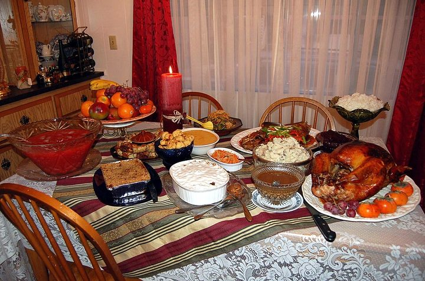
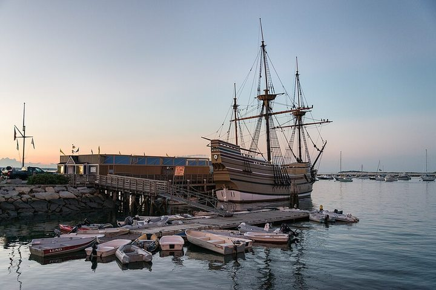

Thanksgiving Explorer
History, nature, real maps, and American traditions

32 Picture Questions
Thanksgiving Quiz
Look at real photos and answer fun questions about ships, food, nature, and holidays.
8 questions per round

Real Map & 1620 Sea Voyage
Voyage & US Map
Sail the Mayflower across the ocean, build Plymouth town, and visit US harvest states.
8 stops & sea events per round
1 / 10
1 / 10
Atlantic Voyage
Labels: On
Reset view
Day 24 · Mid-Atlantic
Round Complete
Home
Play again
Grown-ups
About
Progress
Settings